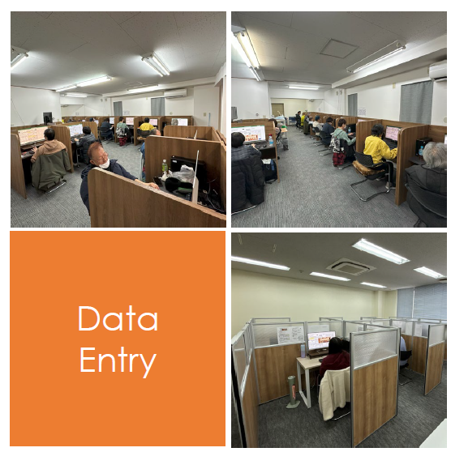
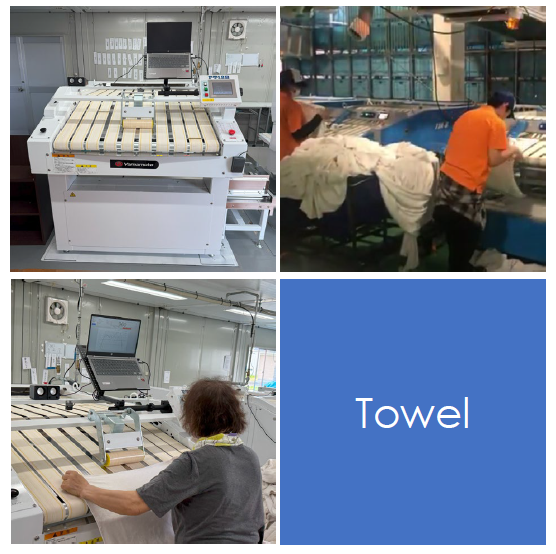

就労継続支援A型
働く喜びを大切にし、やる気を支援します
コンセプト
「働く喜びを大切にし、やる気を支援」──
二つのリワークで、あなたの新しい一歩をサポートします。
RE-WORK（リワーク）
メンタルヘルス不調からの復職ウォーミングアップ。
無理のないペースで、職場復帰への準備を整えます。
離ワーク
病気・加齢による離職からの再出発。
新たな働き方を見つけ、社会参加への道を開きます。
データエントリ業務
特性・能力に合わせた3分業制
- 文字入力・数値入力・判定作業の3つに分かれた作業体制
- ダブルエントリ方式（2名入力＋システム判定）で高精度を実現
- 独自データエントリシステムによる入力箇所の指示・配賦の自動制御
- 個別ブース・平場ブースの選択可（精神状態に配慮）

タオル作業

リズムに乗った作業支援
- ゲーム音楽に乗ったリズム作業支援システム
- アセスメントシステムで作業データを計測・バイアスなし評価
- 希望者は札幌市内リネンサプライ工場での施設外就労可
- デスクワーク＋体を動かす作業で精神安定を目指す